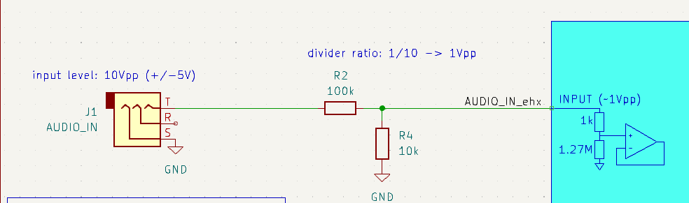
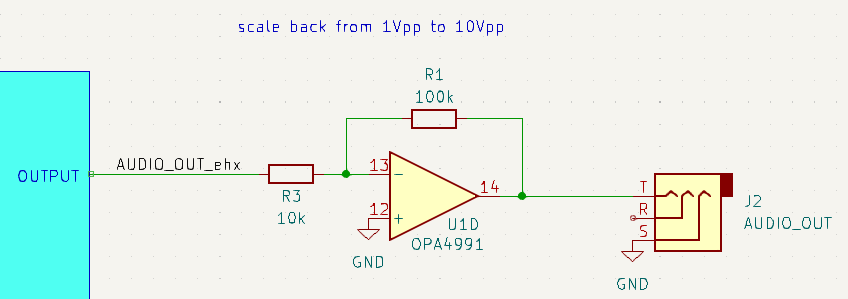
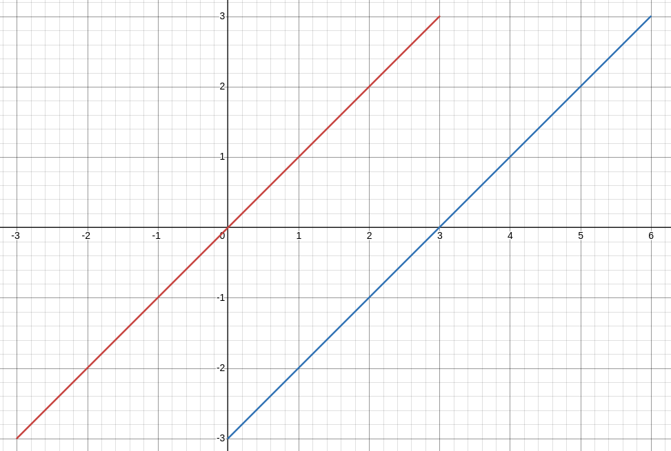
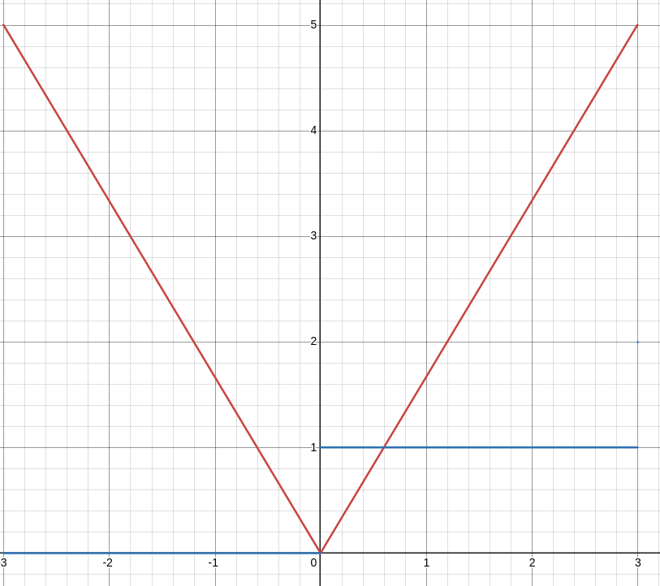
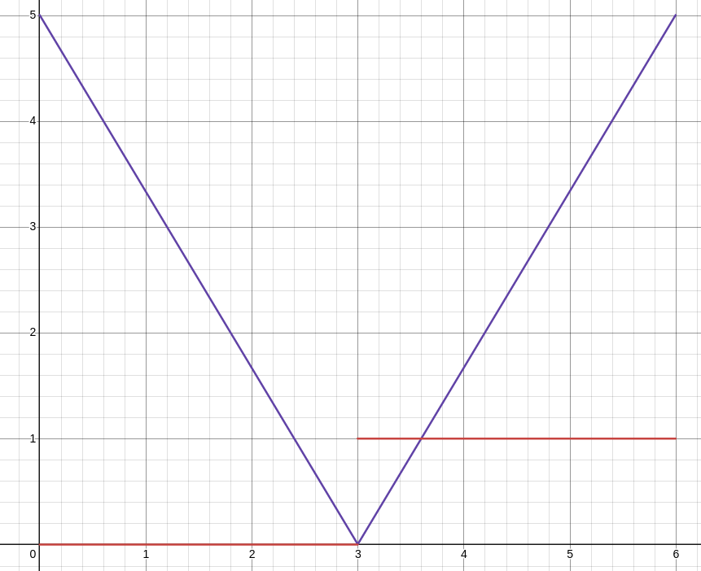
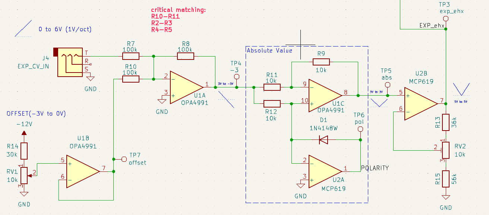
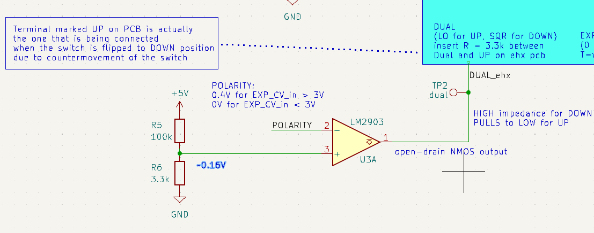

Figure
7: 3-way switch selecting
the direction of the pitch shift.
EHX Pitchfork Eurorack Mod
EHX Pitchfork is a guitar effect that shifts the pitch of incoming signal. Most likely, this is done by using a Fast Fourier Transform (FFT) to transform the signal into a frequency domain, move it by desired amount, and transform back into time domain. This modification is a interface board which allows using the effect with standard Eurorack voltages and dimensions.
The first difference between the guitar effects and eurorack applications is the supply voltage. The former uses 9V, the latter uses +/-12V. However, the internal circuits of the Pitchfork are mostly digital ICs (ADSP-BF592, AK4552) running on 3.3V, requiring a voltage regulation from 9V. Fortunately, the voltage regulator can handle up to 15V input voltage (tps62120). I was slightly concerned about the ESD and reverse battery protection circuits not withstanding 12V instead of 9V, but they did. Thus, the EHX Pitchfork can be fully powered by the 12V eurorack rail connected to its 9V supply input.
The second important consideration was the strength of the input signal. The effect has been designed for guitar output signals, which only reach 1V peak-to-peak (Vpp) at the absolute maximum. On the other hand, the Eurorack audio signal is usually 5Vpp, while other Eurorack signals can climb up to 10V. To ensure compatibility with any Eurorack signals, the interface board scales down the input signal by 10, using a voltage divider (Figure 1). The input resistance of the Pitchfork (turquoise block) is very high and does not affect the divider ratio significantly.

Figure
1: Voltage divider to scale
down the input signal to approprate levels. The opamp circuit in the
turquoise represents the input circuit on the Pitchfork.

Figure
2: Output buffer scaling
the audio signal back to the incoming level.
There is a couple of different knobs and switches to control the effect: BLEND, SHIFT, LATCH and DIRECTION. Moreover, the is an EXP input for expression pedal as well.
The function of the controls are:
BLEND – a knob that controls the ratio of the original and pitch-shifted signal
SHIFT – a knob that selects the interval by which the audio is shifted
LATCH – a button that toggles between momentary and always ON/OFF modes
DIRECTION – a 3-position switch that selects the direction of pitch shifting: up, down or both
EXP – the input works differently depends on the LATCH mode:
momentary – sets the glide time from the original to the destination pitch
ON/OFF - controls the interval by which the audio is shifted, from 0 to the interval set by the SHIFT knob
ENGAGE Footswitch – a button that turns effect ON or OFF depending on the LATCH mode
ON/OFF mode - toggles between ON and OFF on each press
momentary – turns the effect ON only when the switch is pressed
Since Eurorack works on control voltages (CV), the aim of this modification was to be able to control the parameters by voltage signals instead of mechanical interface. Especially important is the EXP input, since it allows for (almost) continuous variation of the pitch, unlike the SHIFT knobs, which only selects from a common intervals such as octaves.
The standard in eurorack is to use 1V/oct scaling for CVs that control the pitch. Moreover, we want to exploit the whole range of the effect, so the SHIFT knobs is assumed to be at 3 Octaves setting. Since it is possible to shift up or down, that gives us +/-3 octave shifting range.
Most sequencers and pitch CV signals work in the positive range of voltages: they start at 0 for the lowest note and increase at 1V/oct. However, LFO signals are usually centered around 0 and swing both positive and negative. This offers two types of possible mapping between input signal and the resulting pitch shift:
0V means the lowest note and 6V is the highest note, corresponding to -3 octave shift and +3 octave shift, respectively. Thus, the original audio without pitch shifting occurs at 3V.
-3V means the lowest and and 3V is the highest note, corresponding to -3 octave shift and +3 octave shift, respectively. The original audio without pitch shifting occurs at 0V.
Because of this dilemma and to provide an option to tune any offset, a potentiometer to set the ‘mid-point’, where no pitch shifting occurs, has been added. The function between CV and shift interval for both cases is shown in Figure 3.

Figure
3: Mapping functions
between interval (y-axis) and CV signal (x-axis). Blue represents
the first option, blue the red one
Now that there is a requirement what an input signal should be, it needs to be transformed into an appropriate signal for the Pitchfork. In the effect’s manual, is says the EXP input accepts either a 10k potentiometer, or a control voltage between 0 and 5V. As mentioned before, the effect changes the pitch depending on the EXP input: 0V means no change, 5V means shift by the interval given by SHIFT knobs, in this case 3 octaves. However, this is only in a direction given by the DIRECTION switch, which needs to be changed in order to produce the shift in other direction. In other words, for -3 octave shift, the EXP in needs to be at maximum (5V) and the DIRECTION needs to be set to DOWN. By reducing EXP input voltage, the pitch shift moves towards 0 at EXP = 0V. Then the DIRECTION needs to be switched to UP position and again EXP input needs to increase from 0V to 5V for maximum 3 octave shift. This is visually displayed in Figure 4, where x-axis is the desired pitch shift and y-axis is the required EXP signal (orange) and DIRECTION (blue, 0 for down, 1 for up).

Figure
4: Mapping function between
required EXP voltage (y-axis) and desired pitch shift (x-axis)
represented by the orange line. Blue line represents the DIRECTION
switch position (0 for down, 1 for up).
Putting together these two requirements for input CV voltage and EXP voltage, it is possible to map them together. Figure 5 represents the required EXP voltage (blue line y-axis) for given input CV (x-axis) if 1V/oct scaling is desired and centered around 3V. Then, the red line represents the position of the DIRECTION switch (0 for down 1 for up). Also, the offset of the pitch-CV mapping determines the ‘tipping’ point of this mapping function.

Figure
5: Mapping function between
in pitch CV input voltage and required EXP voltage to get the 1V/oct
centered around 3V of input voltage.
As can be seen from Figure 5, the mapping function between input CV and EXP is an absolute value function of a linear function with slope 5/3. Thus: EXP(CV) = 5/3*(abs(x)). This can be easily implemented by an absolute value circuit and a op-amp with gain of 5/3 (Figure 6). Moreover, the offset is added by a summing op-amp, where one of the inputs is controlled by a potentiometer. The variable offset range is between 0 and 4V. The gain stage is powered by 5V taken from the EHX board, to prevent over-voltage occurring at EXP_ehx node. EXP connector provides 5V on its ring terminal.

Figure
6: Offset (left), absolute
value (middle), gain of 5/3 (right)
If the position of the switch could be controlled by logic signals, it would be simple: a comparator with threshold of the offset magnitude would decide whether the DIRECTION is up (1) or down (0) depending on the EXP input signal. However, the value of the offset, and the signal that creates it are opposite, and would need to be multiplied by -1. Because of this, the output of U2A op-amp is used instead. This op-amp creates the absolute value by forcing virtual GND on in inverting input for signals <0. The diode in the negative feedback needs a Vbe drop ~0.7V, so the output of the U2A needs to be at that level. This would only apply for signals <0, while for signals >0 the output will be 0 since its inverting output > non-inverting output. It is important to set the threshold sufficiently low, as the diode voltage drop (and the U2A output) can be as low as 0.4V. The comparator connection is explained later.

On the EHX side, the switch works a bit differently than 2 logic levels. It is a 3-position mechanical switch, which connects the second (middle) terminal to the first terminal, no terminal, or the third terminal depending on the position. The middle terminal is connected and processed by the MCU. The resulting signals seen by the MCU depending on the position are:
UP – logic low
DUAL – logic high
DOWN – square wave of 55Hz and 1.8Vpp
The detailed schematic how this is implemented is shown below:
Figure
7: 3-way switch selecting
the direction of the pitch shift.
The output of the comparator (Figure 7) is NMOS open-drain, so it pulls the output to the ground for Vin- > Vin+ and stays in high impedance for Vin+ > Vin-. Connecting the output to the middle terminal of the switch allows pulling the node to GND (resulting in setting the pitch shift direction to UP) or not interfering with the node by being HI-Z.
To achieve setting the direction to DOWN position, it is needed to present the 55Hz square wave to the middle terminal of the switch (and MCU). It is possible to reuse the EHX generated wave by connecting the first and the second (middle) terminals through a resistor. Theoretically, a direct connection could work, but resistor is used to limit the current when the middle terminal is pulled to ground by the comparator to prevent any damage to the square wave generation circuit. At the same time, the value should be sufficiently low to prevent significant voltage-divider effect and reduction of the signal seen by the MCU. A value of 3.3k Ohm seems to work well.
Finally, the comparator should stay in HI-Z and let the square wave signal go through unaffected when shifting downwards. This is the case for EXP input signals lower than the offset, which are positive at the input of the absolute value circuit, because of the inversion in the summing op-amp. Conversely, the EXP input signals higher than the offset are negative at the input of the absolute value circuit. Thus, the polarity node (output of U2A) is 0 for EXP input lower than offset and slightly positive for EXP input higher than offset. Since comparator output is in HI-Z for Vin+ > Vin- and we want it to be HI-Z for polarity = 0 < threshold = 0.16V, then polarity needs to be connected to the inverting input and threshold to the non inverting input.

Figure
8: Pitch shifting direction
control circuit: resistor between terminal 1 and 2 routes the square
wave to MCU. Terminal 2 is pulled to ground or unaffected by the
comparator, depending on the polarity
This circuit pulls the terminal 2 to GND for polarity < 0.16V, resulting in UP shift direction. The circuit leaves terminal 2 unaffected for polarity > 0.16V, resulting in DOWN shift direction.
The Pitchfork features a foot switch that engages the effect. It has two modes: momentary and toggle. The foot switch is actually a button connected to a MCU pin. It is normally open (HI-Z) and connects the pin to GND upon pressing. On the interface board, this is emulated by a NMOS transistor, with its input being controlled by external gate-like CV. For logic HIGH input, the transistor pulls the pin to GND, mimicking the button being pressed. For logic LOW, the transistor is off and presents HI-Z to the pin. Furthermore, the button was replicated on the interface board, so it can be controlled by the user manually as well. Since the transistor is open-drain, shorting of the output when the button is pressed is not an issue.

Figure
9: Engage circuit mimicking
the footswitch: pushbutton acts exactly the same as the footswitch,
while open-drain transistor behaves like the footswitch for the MCU.
The interface board needs to be connected to the appropriate points on the EHX board (Figure 10). The +12V power and GND can be connected to the barrel power jack. The audio signals need to be connected to the TIP terminals of the Input and Output connector respectively. The EXP input control voltage (EXP_ehx) needs to be connected to the TIP terminal of EXP connector. The output of the comparator (DUAL_ehx) should be connected to the middle terminal of the 3-way direction switch labeled as DUAL on the EHX pcb. The 5V should be connected to the RING terminal of the EXP connector. The output of the switch control circuit (SW_ehx) should be connected to the positive terminal of the footswitch. All the switches and connectors except latch, were removed for better access. Furthermore, jack connectors are switched, meaning they short two terminals when unconnected, which is undesired.

Figure
10: Connectors on the
interface board: left - standard eurorack connector, right - header
connector to the EHX board
This mod provides a way of using EHX Pitchfork effect in a eurorack modular setup. It allows powering of the effect by standard eurorack supply and using eurorack audio levels. Furthermore, the controls of footswitch, expression pedal and direction switch are possible using a control voltages compatible with eurorack standards.

Figure
11: The final module with connections between the interface board (bottom) and the ehx board (top), including the faceplate.